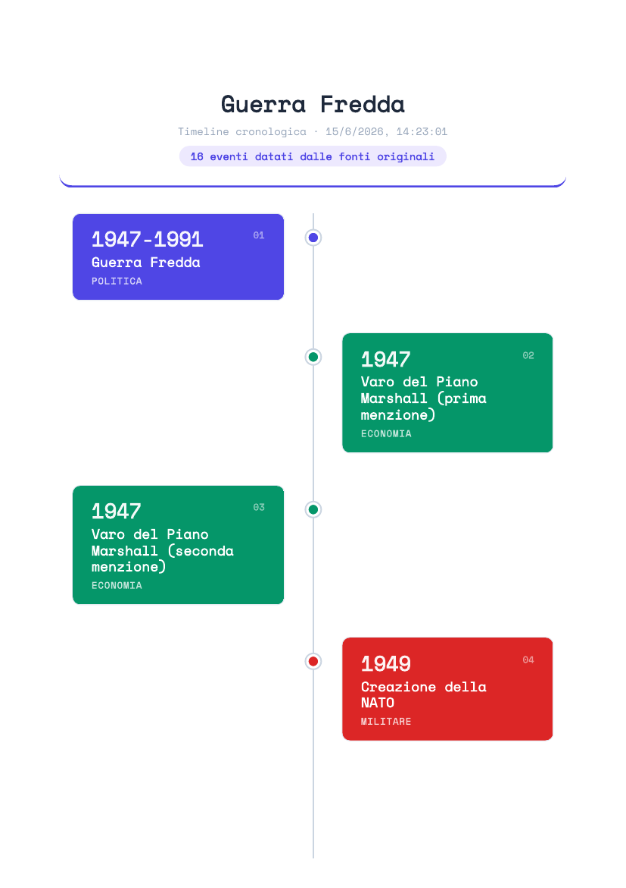
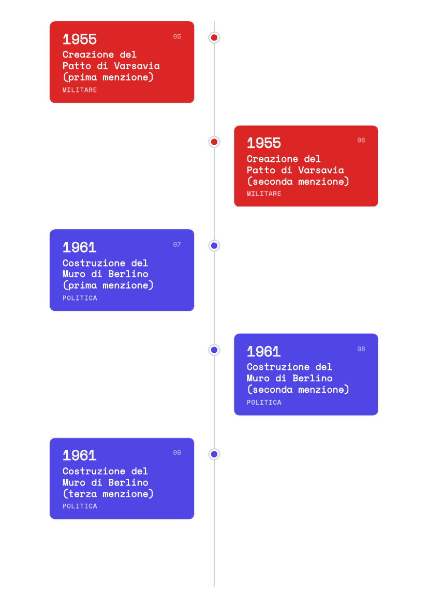
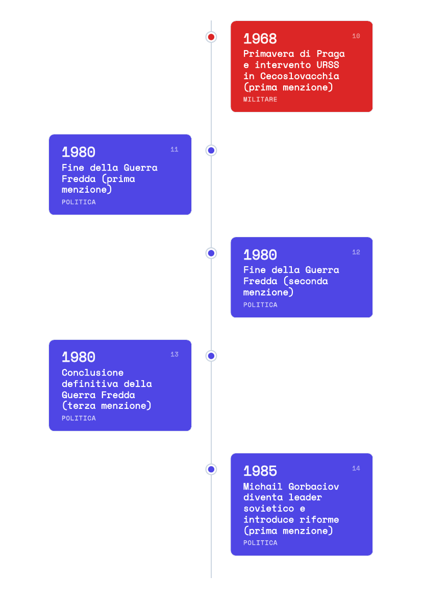
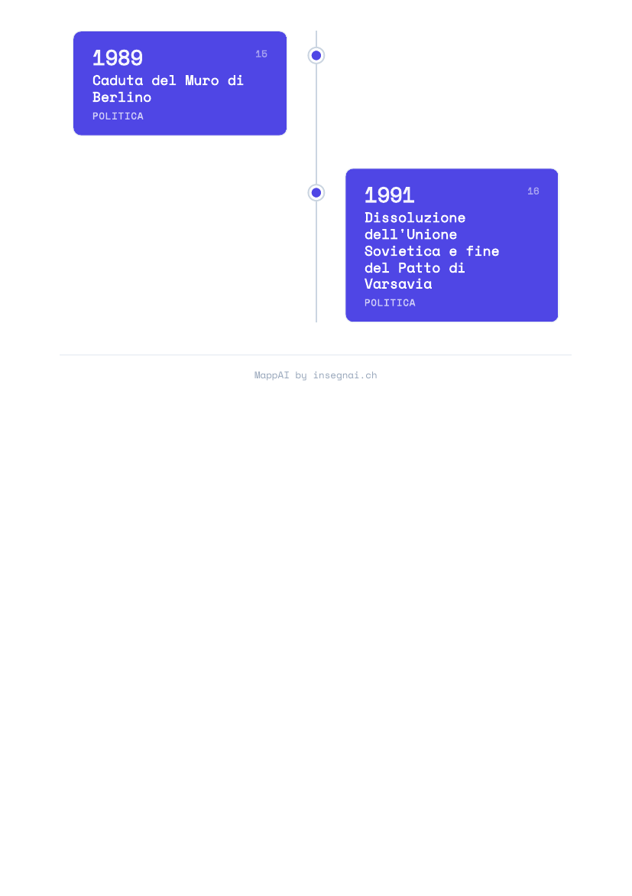

Desktop app (Win / Mac / Linux). Multi-phase AI engine (Gemini + Infomaniak). Offline-first. GDPR/nLPD-compliant. No cloud lock-in.

Knowledge Graph · Auto-generated from a Cold War history text · 38 nodes · 47% cross-linked

Timeline view — chronological knowledge structure

Timeline detail — semantic node expansion

Cross-link visualization — relation types highlighted

Mind map — hierarchical L0→L5 structure
Every map generates a complete learning toolkit automatically — from passive review to active knowledge reconstruction. No extra steps, no separate software.


Seven independent modes that turn passive review into active knowledge reconstruction — grounded in retrieval practice and spaced repetition research.